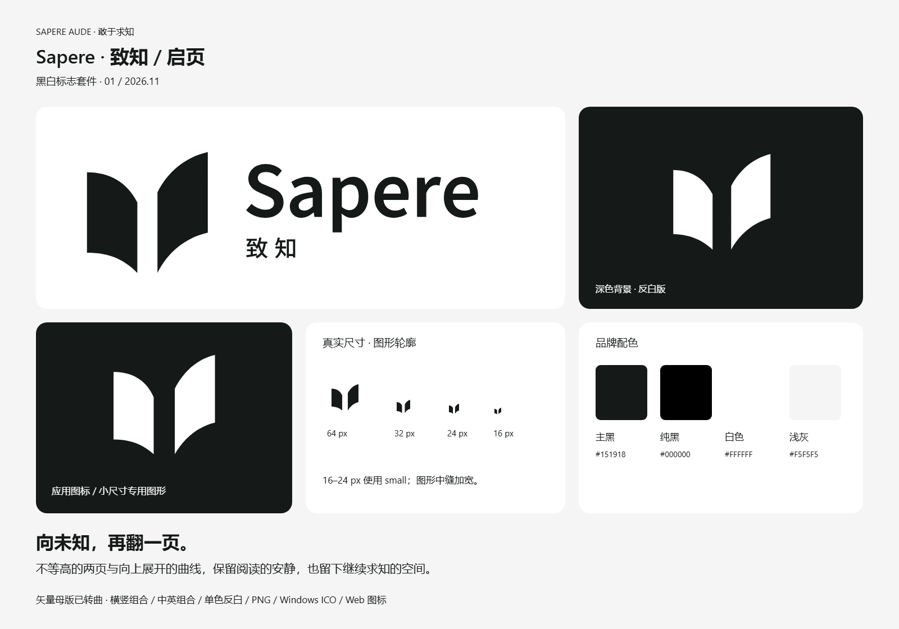
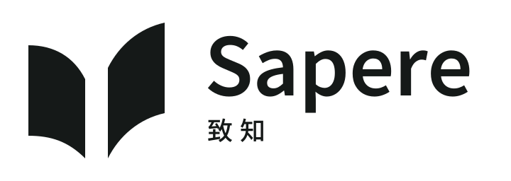
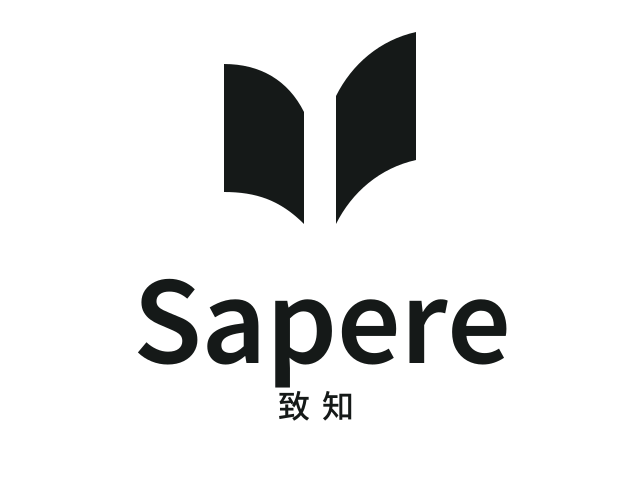
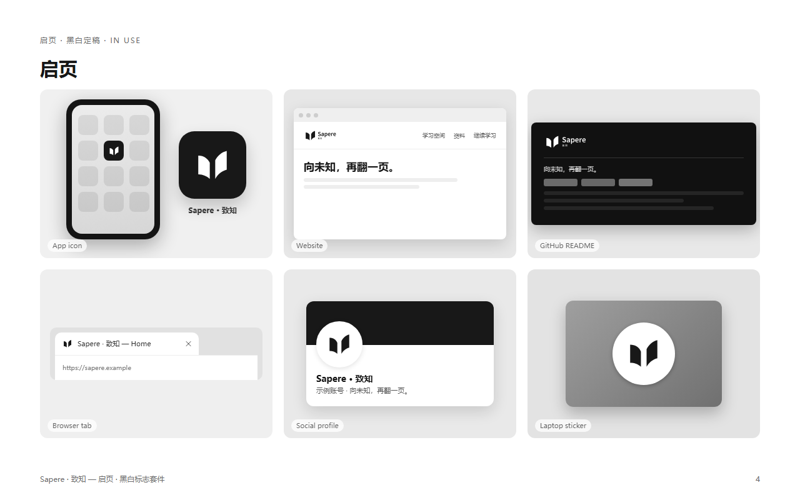

Sapere · 致知 / 启页
品牌套件 v1.0 · 向未知，再翻一页。
按使用场景选择

中英文主标志深色背景反白版

竖向组合应用图标 · 另附 ICO
中文组合
64 px
32 px
16 px
应用效果

场景仅用于展示品牌。示例域名和账号不代表已注册，界面不代表产品功能已经实现。


中英文主标志
竖向组合
场景仅用于展示品牌。示例域名和账号不代表已注册，界面不代表产品功能已经实现。